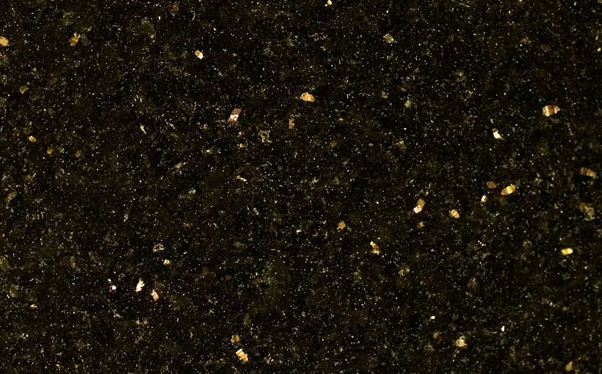
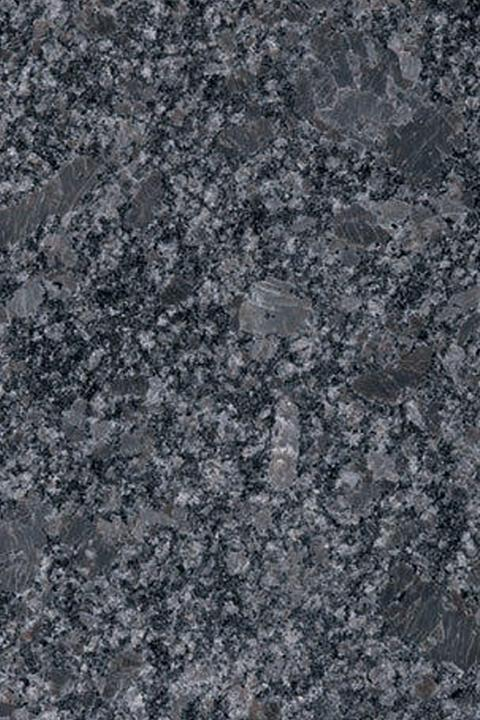
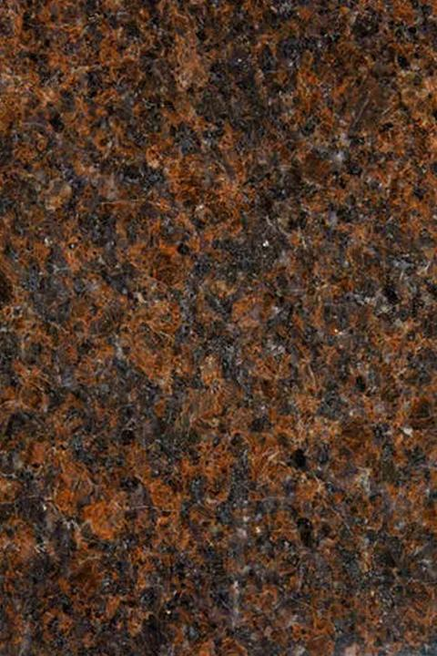
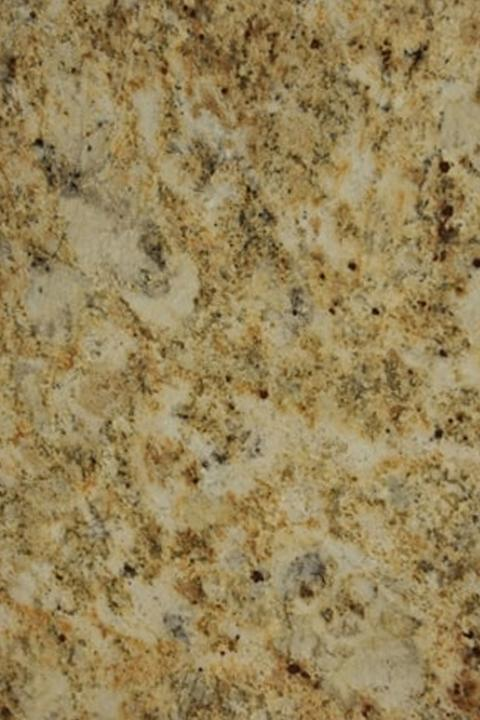

Dark
DarkBlack Galaxy Granite
Deep black stone with sparkling golden flecks — a timeless choice for kitchens.
CountertopsFlooringStaircases
Enquire
From deep Black Galaxy to bright Platinum White — compare our most popular granites, tap to zoom in, and send us an enquiry for the one you like.
Natural stone varies from slab to slab. Visit our showroom to choose your exact slab, or ask us for live photos on WhatsApp.
DarkDeep black stone with sparkling golden flecks — a timeless choice for kitchens.

DarkCharcoal-grey with fine silver grains — modern, understated and hard-wearing.
 Blue
BlueRich blue crystals on a dark base — a bold statement for feature surfaces.
 Green
GreenDeep green with pearl-like shimmering crystals that catch the light.
 Red
RedA vibrant deep red with dark grains — popular for elevations and monuments.

BrownWarm brown tones with black and copper speckles — hides stains well.
 Brown
BrownSoft beige-brown with grey and black spots — a natural, earthy look.

GoldCreamy gold background with brown and burgundy accents — bright and inviting.
 Light
LightClean white base with fine grey and black specks — makes spaces feel open.
Dark granites like Black Galaxy, Steel Gray and Coffee Brown resist stains and hide daily wear.
Lighter shades like Platinum White and Desert Brown brighten rooms and halls.
Ruby Red and Steel Gray give strong, durable surfaces with a bold look.
These are our popular picks — ask us for the full range, finishes and thicknesses.